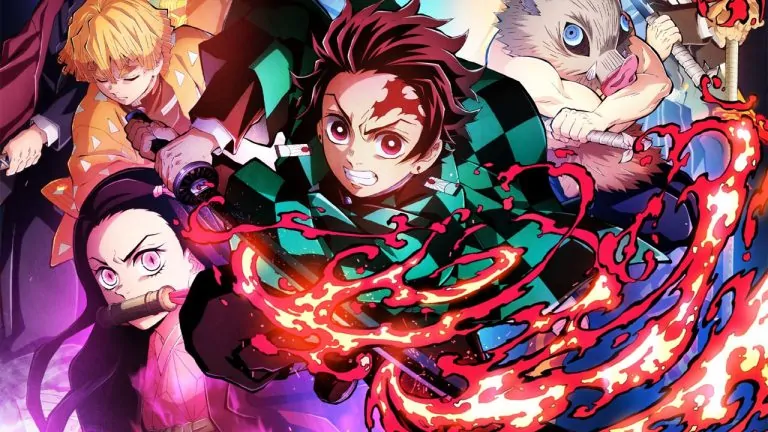
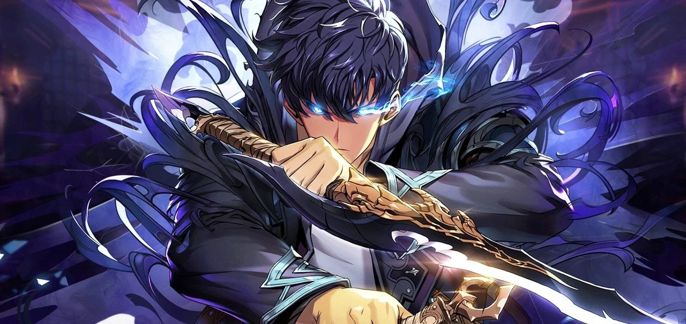
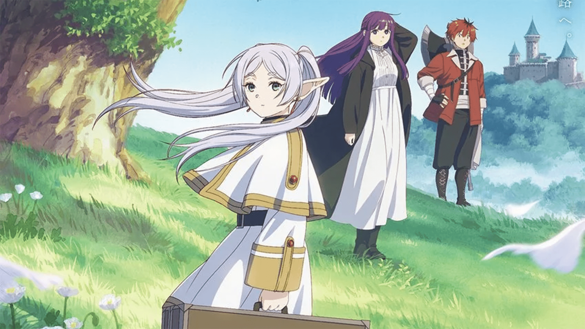

Demon Slayer – Kimetsu no Yaiba é uma série de anime e mangá
japonesa criada por Koyoharu Gotouge. A história acompanha Tanjiro
Kamado, um jovem bondoso que se torna um caçador de demônios depois
que sua família é atacada por um deles, e sua irmã Nezuko se
transforma em um demônio. Tanjiro parte em uma jornada para vingar
sua família e buscar uma cura para Nezuko. Ao longo do caminho, ele
enfrenta vários demônios e faz aliados poderosos, como Zenitsu e
Inosuke. A trama mistura ação, emoção e elementos sobrenaturais. A
série é conhecida por sua animação impressionante, lutas intensas e
personagens cativantes. Demon Slayer conquistou fãs no mundo todo e
se tornou um dos animes mais populares dos últimos tempos.
Por: Igor Prado
Ler Mais

Solo Leveling é uma série sul-coreana de web novel e manhwa escrita
por Chugong. A história se passa em um mundo onde portais surgem e
liberam monstros perigosos. Para enfrentá-los, algumas pessoas
recebem poderes mágicos e se tornam caçadores. O protagonista é Sung
Jin-Woo, o caçador mais fraco de todos. Mas sua vida muda
completamente quando ele sobrevive a uma dungeon mortal e recebe um
poder especial: a habilidade de ficar mais forte sozinho, como em um
jogo de RPG. A partir daí, ele começa a subir de nível rapidamente e
se torna um dos caçadores mais poderosos do mundo. A série é
conhecida por sua ação intensa, evolução do personagem e arte
impressionante. Solo Leveling se tornou um fenômeno global e ganhou
uma adaptação em anime em 2024.
Por: Igor Prado
Ler Mais

Frieren: Beyond Journey's End é um mangá e anime japonês criado por
Kanehito Yamada e Tsukasa Abe. A história começa após a vitória dos
heróis contra o Rei Demônio. Com a missão cumprida, o grupo se
separa, mas para a elfa maga Frieren, que vive por séculos, o fim da
jornada é apenas o começo. Anos depois, Frieren percebe o quanto
pouco conhecia seus antigos companheiros humanos, que já
envelheceram ou morreram. Arrependida por não ter valorizado melhor
esses laços, ela decide embarcar em uma nova jornada para entender
os sentimentos humanos, fazer novas amizades e refletir sobre o
tempo, a memória e a perda. A série é conhecida por seu ritmo calmo,
momentos emocionantes e reflexões profundas sobre a vida, o tempo e
a amizade.
Por: Igor Prado
Ler Mais